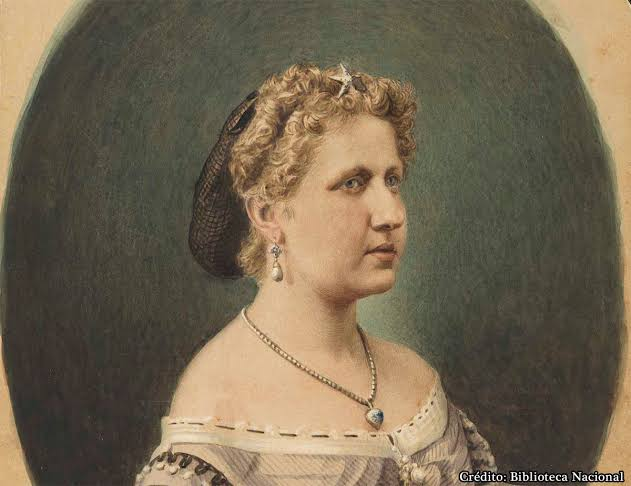

Projeto Liberdade
Sobre:
Tema:
O objetivo inicial do site é mostrar de forma educativa a abolição dos escravos no Brasil, o tema é apresentado por quiz com diversas perguntas sobre o tema, é um jogo para uma abordagem mais dinamica para todos os publicos.
A Liberdade é um tema muito decorrente em todos os séculos, pois, por mais que estejamos livres ainda não houve uma liberdade total. No brasil desde a descoberta, o povo lutou por uma liberdade, para eles terem o poder da escolha, terem suas vontade supridas...e nos dias de hoje o povo ainda luta por ter a sua liberdade de expressão ouvida pela grande massa! Muitos acreditam que somos livres, mas isso ainda não foi atingido. Para alcançar uma liberdade pessoal devemos nos conscientizar comos pessoas livres, pois, só assim o mundo poderá ser mudado aos poucos, e foi dessa mesma forma que os escravos lutaram para sair de suas algemas, sairem de suas obrigações e lutaram por suas vidas.
Como era a escravidão no Brasil:
Os negros africanos, trazidos da África, eram transportados nos porões dos navios negreiros. Em função das péssimas condições deste meio de transporte desumano, muitos morreram durante a viagem. Após desembarcaram no Brasil eram comprados como mercadorias por fazendeiros e senhores de engenho, que os tratavam de forma cruel e, muitas vezes, violenta. Embora muitos considerassem normal e aceitável, a escravidão naquela época, havia aqueles que eram contra este tipo de prática, porém eram a minoria e não tinham influência política para mudar a situação. Contudo, a escravidão permaneceu por quase 300 anos. O principal fator que manteve o sistema escravista por tantos anos foi o econômico. A economia do Brasil contava quase que exclusivamente com o trabalho escravo para realizar os trabalhos nas fazendas e nas minas. As providências para a libertação dos escravos, de acordo com alguns políticos da época, deveriam ser tomadas lentamente.
Processo de libertação:
Na segunda metade do século XIX surgiu o movimento abolicionista, que defendia a abolição da escravidão no Brasil. Joaquim Nabuco foi um dos principais abolicionistas deste período.A região Sul do Brasil passou a empregar trabalhadores assalariados brasileiros e imigrantes estrangeiros, a partir de 1870. Na região Norte, as usinas produtoras de açúcar substituíram os primitivos engenhos, fato que possibilitou o uso de um número menor de escravos. Já nos principais centros urbanos, era grande a necessidade do surgimento de indústrias. Visando não causar prejuízo financeiros aos proprietários rurais, o governo brasileiro, pressionado pelo Reino Unido, foi alcançando seus objetivos lentamente.A primeira etapa do processo foi tomada em 1850, com a extinção do tráfico de escravos no Brasil. Vinte e um anos mais tarde, em de 28 de setembro de 1871, foi promulgada a Lei do Ventre-Livre. Esta lei tornava livres os filhos de escravos que nascessem a partir da decretação da lei.No ano de 1885, foi promulgada a lei Saraiva-Cotegipe (também conhecida como Lei dos Sexagenários) que beneficiava os negros com mais de 65 anos de idade.Foi somente em 13 de maio de 1888, através da Lei Áurea, que a liberdade total e definitiva finalmente foi alcançada pelos negros brasileiros. Esta lei, assinada pela Princesa Isabel (filha de D. Pedro II), abolia de vez a escravidão em nosso país.
Princesa Isabel:
Em 13 de maio de 1888,a princesa Isabel assinou a lei Áurea que aboliu a escravidão no Brasil. "Áurea" quer dizer "de ouro" e a expressão refere-se ao caráter glorioso da lei que pôs fim a essa forma desumana de exploração do trabalho. Em território brasileiro, a escravidão vigorou por cerca de três séculos, do início da colonização à assinatura da lei Áurea.
DIVERSAS LIBERDADES:
Liberdade de opinião:
Liberdade de opinião é o direito que permite as pessoas manifestarem suas opiniões sem medo de represálias. Igualmente, autoriza que as informações sejam recebidas por diversos meios, de forma independente e sem censura. Ou seja, ela significa o direito de exteriorizar a opinião pessoal ou de um grupo, sempre com respeito e respaldada pela veracidade de informações.Esse direito é garantido pela Declaração Universal dos Direitos Humanos.
Infelizente isso quase nunca é respeitado, pois, as midias televisivas e sociais apontam a verdade de forma distorcidada fazendo com que o publico mude a sua forma de pensar por influência de pessoas com um maior poder.
Liberdade artística:
Temas como a arte e cultura vêm, cada vez mais, ganhando proeminência nos campos do direito constitucional e dos direitos fundamentais. Uma das conseqüências desse movimento é a consagração, nos textos constitucionais contemporâneos, do direito à liberdade de expressão artística, enquanto uma liberdade fundamental específica que compõe o quadro das liberdades de expressão. Tendo em vista que a arte é uma forma singular de expressão, também a liberdade artística se especifica e merece ser explorada um direito autônomo
Liberdade comunicativa:
A liberdade comunicativa é a capacidade de transmitir informação do emissor para um ou mais receptores, envolvendo capacidade material como a disponibilidade de componentes como canal de propagação, meio de comunicação e órgãos da fala; capacidade mental como o conhecimento intelectual dos símbolos necessários à comunicação; capacidade emocional como a superação do medo de se expor; capacidade social como um ambiente politico-social que possibilite ao indivíduo transmitir informação sem barreiras ou censuras. Ou seja, assim como toda forma de manifestação humana, envolve poder material, mental, emocional e social.
Liberdade de escolha:
Indispensável que se reconheça que a sexualidade integra a própria condição humana. Ninguém pode realizar-se como ser humano se não tiver assegurado o respeito ao exercício da sua sexualidade, conceito que compreende tanto a liberdade sexual como a liberdade à livre orientação sexual. Visualizados os direitos de forma desdobrada em gerações, é imperioso reconhecer que a sexualidade é um direito de primeira geração, do mesmo modo que a liberdade e a igualdade. A liberdade compreende o direito à liberdade sexual, aliado ao direito de tratamento igualitário, independente da tendência sexual. Trata-se, assim, de uma liberdade individual, um direito do indivíduo, e, como todos os direitos do primeiro grupo, é inalienável eimprescritível. É um direito natural, que acompanha o ser humano desde o seu nascimento, pois decorre de sua própria natureza.